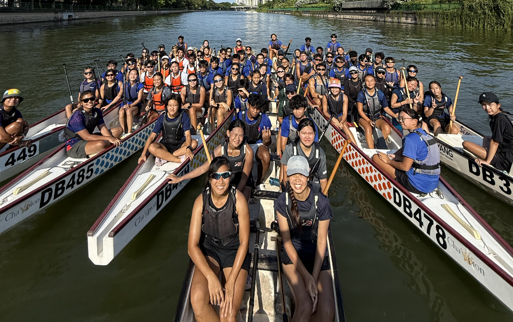
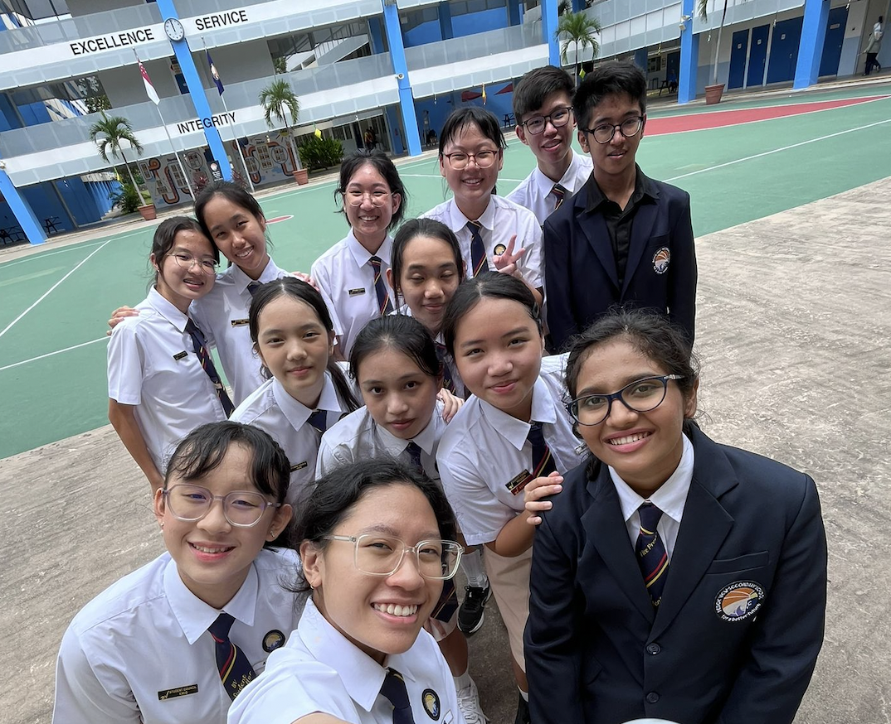
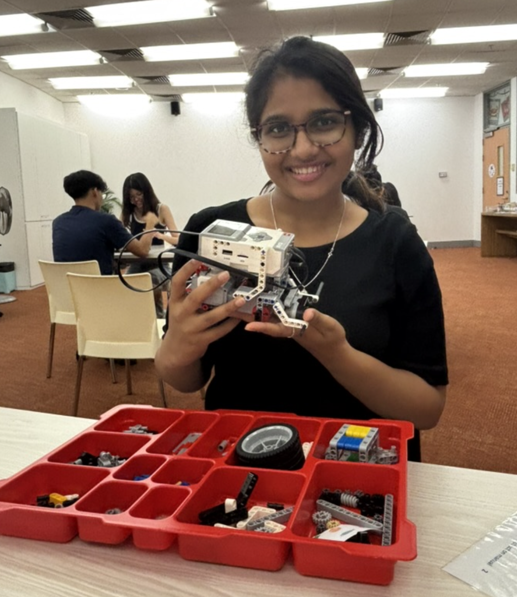
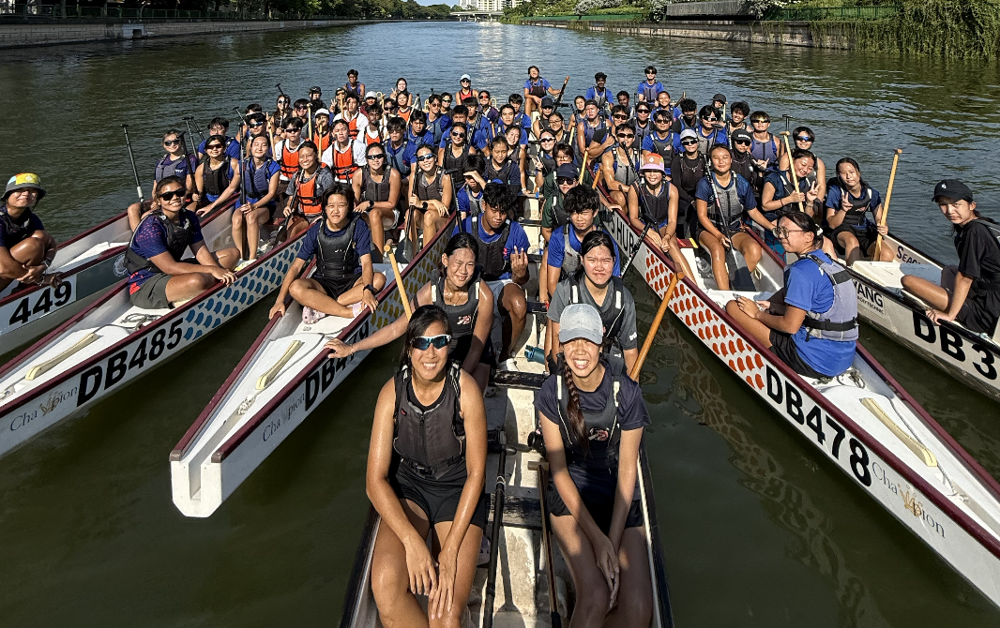
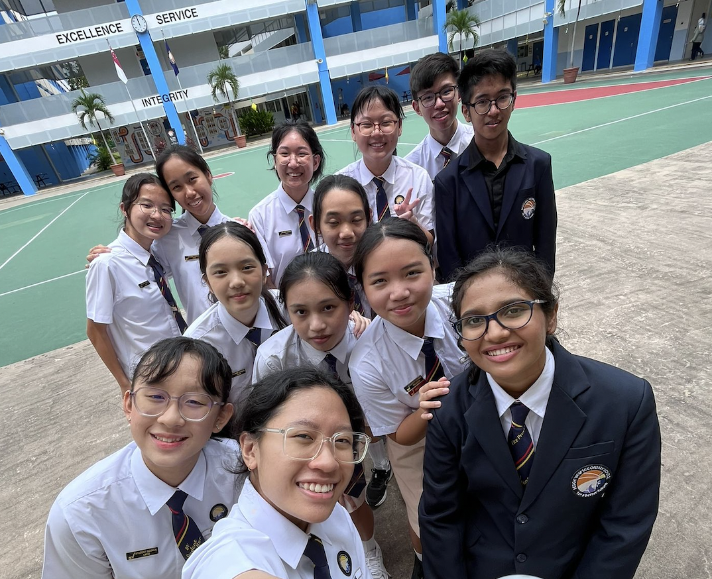
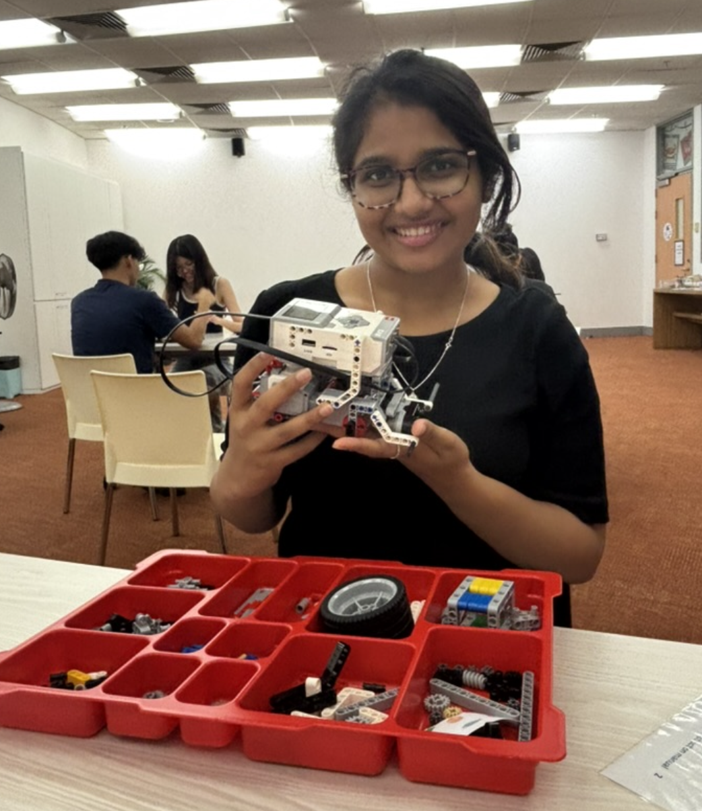

About Me
Hi, I'm Parnika! I’m a Year 2 Information Technology student at Nanyang Polytechnic with a passion for building interactive digital experiences. I enjoy solving problems through technology and bringing ideas to life through code.
When I’m not coding, you’ll find me cooking, solving jigsaw puzzles, or building LEGO creations — hobbies that fuel my creativity and attention to detail.
I'm actively involved in dragon boating, where I’ve developed grit and teamwork, and I had the honour of serving as Vice-President of the Student Council, leading peers and organizing impactful school events.
I'm currently exploring full-stack development with tools like React, Node.js, and MySQL, and have participated in hackathons and collaborative tech projects.
I’m always eager to learn, grow, and collaborate on exciting tech initiatives.
 




